Auf Bau- und Montagestellen sind elektrische Betriebsmittel Schmutz und Feuchtigkeit sowie durch den rauen Betrieb mechanischen Belastungen ausgesetzt. Die Beschäftigten müssen jederzeit wirkungsvoll gegen elektrische Körperdurchströmungen geschützt sein. Dies gewährleisten u. a. elektrische Betriebsmittel, die für die besonderen Einsatzbedingungen bei Bau- und Montagearbeiten geeignet sind.
3.1.1 Speisepunkte
Elektrische Betriebsmittel auf Bau- und Montagestellen müssen von besonderen Speisepunkten versorgt werden. Dies sind in der Regel
für kleinere Baustellen
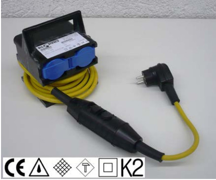
Abb. 3-1 Schutzverteiler (mit PRCD-S)
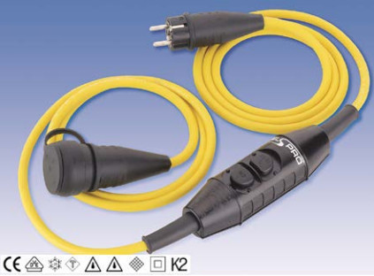
Abb. 3-2 Verlängerungsleitung (mit PRCD-S)
Steckdosen in Hausinstallationen stellen keine sicheren Speisepunkte dar.
3.1.2 Leitungen und Steckverbindungen
Auf Bau- und Montagestellen kommen als bewegliche flexible Leitungen nur Gummischlauchleitungen der Ausführung H07RN-F oder gleichwertige zum Einsatz. PVC-Leitungen verspröden und sind nicht für die rauen Bedingungen auf Baustellen geeignet.
Leitungsroller müssen schutzisoliert ausgeführt, spritzwassergeschützt und mit einer Überhitzungs-Schutzeinrichtung ausgerüstet sein. Entsprechend dem rauen Betrieb auf Baustellen sind robust gebaute Leitungsroller, möglichst mit
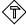
-Symbol, zu verwenden (Abb. 3-3). Um Schäden durch Überhitzung zu vermeiden, ist die Anschlussleitung vom Leitungsroller vor dem Anstecken der Geräte abzuwickeln.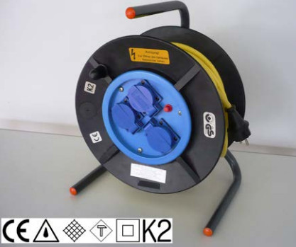
Abb. 3-3 Für Baustellen geeigneter Leitungsroller
3.1.3 Leuchten auf Baustellen
Baustellenleuchten tragen grundsätzlich das -Symbol. Die überwiegend ortsveränderlichen Leuchten entsprechen der Schutzklasse II (schutzisoliert) und haben ein Schutzglas und einen Schutzkorb (Abb. 3-4).
Bei Montagearbeiten in elektrotechnisch engen Räumen sind DGUV Information 209-003 "Metallbau-Montagearbeiten" und DGUV Information 203-004 "Einsatz von elektrischen Betriebsmitteln bei erhöhter elektrischer Gefährdung" zu berücksichtigen.
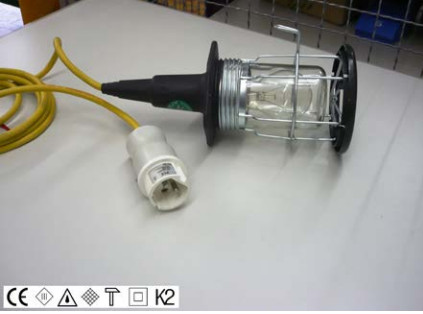
Abb. 3-4 Baustellenleuchte (42 Volt), geeignet für elektrotechnisch enge Räume
3.1.4 Prüfung elektrischer Betriebsmittel
Vor jedem Arbeitseinsatz müssen elektrische Betriebsmittel einer Sichtprüfung auf augenscheinliche Mängel unterzogen werden.
Schadhafte elektrische Betriebsmittel sind sofort der Benutzung zu entziehen. Reparaturen dürfen ausschließlich von Elektrofachkräften durchgeführt werden.
Die Elektrofachkraft führt regelmäßig Prüfungen aller elektrischen Betriebsmittel durch. Die Prüffrist für auf Bau- und Montagestellen eingesetzte Geräte beträgt in der Regel drei Monate (maximale Prüffrist 12 Monate unter bestimmten Voraussetzungen). Die durchgeführte Prüfung muss auf der Baustelle nachvollziehbar sein, z. B. durch Anbringung einer Prüfplakette am Gerät.
Im gewerblichen Bereich sind ausschließlich Bolzenschubwerkzeuge zugelassen (Abb. 3-5).
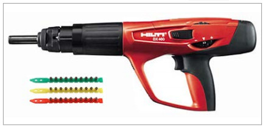
Abb. 3-5 Bolzenschubwerkzeug mit Kartuschen
Bolzenschubwerkzeuge, die bis Ende 2009 hergestellt wurden, müssen folgende Kennzeichnungen tragen:
Bolzenschubwerkzeuge, hergestellt ab 2010, tragen ein CE-Zeichen. Das PTB-Zulassungszeichen und das Prüfzeichen stehen nicht mehr auf dem Gerät.
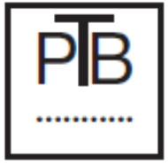
Abb. 3-6 Zulassungszeichen der Prüfstelle
Abb. 3-7 Prüfzeichen
Wesentliche Informationen zum Umgang mit Bolzenschubwerkzeugen liefern die Betriebsanleitungen der Hersteller, z. B.:
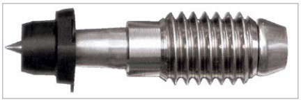
Abb. 3-8 Setzbolzen für Stahl (Gewindebolzen)
Folgende weitere Sicherheitsanforderungen sollten beachtet werden:
Weitere Anforderungen enthält die DGUV Vorschrift 56/57 "Arbeiten mit Schussapparaten".
Bolzenschweißgeräte (Abb. 3-9) arbeiten mit Hubzündung, Spitzenzündung, mit Keramik-Ring oder Schutzgas.
Das Bolzenschweißverfahren zählt zu den schadstoffarmen Schweißverfahren, da die Schweißzeit im Bereich von Millisekunden liegt und das Schmelzbad relativ klein ist.
Bei der Benutzung von Bolzenschweißgeräten sind folgende Schutzmaßnahmen zu beachten:
Wesentliche Hinweise enthält die Betriebsanleitung des Herstellers.
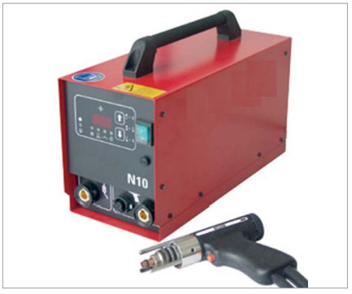
Abb. 3-9 Bolzenschweißgerät
Gerüste und fahrbare Arbeitsbühnen (Abb. 3-10) dürfen nur von fachkundigen Personen gemäß Aufbau- und Verwendungsanleitung des Herstellers auf-, um- und abgebaut werden. Nach dem Aufbau erfolgt die Prüfung durch eine befähigte Person mit Dokumentation. Am fertig gestellten Gerüst werden die Kennzeichnung (Abb. 3-11) und der Plan für die Benutzung angebracht.
Nicht fertig gestellte Gerüste oder Gerüstabschnitte sind abzusperren und zu kennzeichnen (Abb. 3-12).
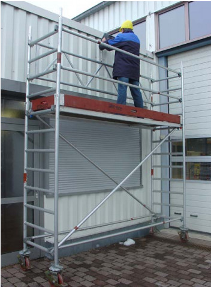
Abb. 3-10 Fahrbare Arbeitsbühne nach DIN EN 1004:2005-03
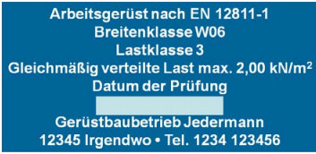
Abb. 3-11 Beispiel einer Gerüstkennzeichnung
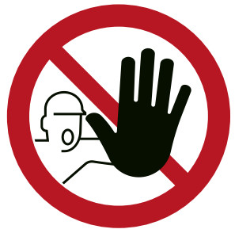
Abb. 3-12 Zutritt für Unbefugte verboten
Wer ein Gerüst benutzt hat auch Pflichten, z. B.:
Es ist sinnvoll, dass die verantwortlichen Personen des Gerüstbauunternehmens und des benutzenden Unternehmens die Prüfung bei der Gerüstübergabe gemeinsam durchführen und auch das Protokoll gemeinsam unterschreiben.
Nähere Angaben über die Errichtung und Benutzung von Gerüsten enthält die DGUV Information 201-011 "Handlungsanleitung für den Umgang mit Arbeits- und Schutzgerüsten".
Schutznetze sind Auffangeinrichtungen, die abstürzende Personen sicher auffangen sollen. Sie werden eingesetzt als Sicherheitseinrichtung bei der Montage von Rosten, wo ein sicherer Standplatz (z. B. Gebäudeteile mit Seitenschutz oder Gerüste) nicht vorhanden ist. Der Einsatz von Schutznetzen hat Vorrang vor der PSA gegen Absturz (siehe Abschnitt 1.2.1).
Schutznetze dürfen nur durch fachkundige Monteurinnen und Monteure angebracht werden. Eine Kennzeichnung, aus der die wichtigsten Informationen hervorgehen, ist dauerhaft am Schutznetz angebracht (Abb. 3-13).
Nähere Angaben zu Schutznetzen liefern die DGUV Regel 101-011 "Einsatz von Schutznetzen" und die DGUV Information 201-037 "Montage von Profiltafeln für Dach und Wand".
Abb. 3-13 Schutznetzkennzeichnung
Fahrbare Hubarbeitsbühnen kommen bei der Verlegung von Gitterrosten z. B. an Fassaden zum Einsatz. Hier sind die Vorgaben des Herstellers (Betriebsanleitung) und die Anforderungen an die Bedienpersonen von Bedeutung (siehe DGUV Grundsatz 308-008 "Ausbildung und Beauftragung der Bediener von Hubarbeitsbühnen"). Auf Folgendes ist besonders zu achten:
Beim Einsatz von fahrbaren Hubarbeitsbühnen muss eine mit dem Notablass vertraute Person sich in der Nähe aufhalten, um Rettungsmaßnahmen umgehend einleiten zu können.
Nähere Angaben zu fahrbaren Hubarbeitsbühnen siehe DGUV Information 208-019 "Sicherer Umgang mit fahrbaren Hubarbeitsbühnen".
Flurförderzeuge (Gabelstapler) eignen sich nur zum Transport von Lasten, z. B. Gitterrostpakete.
3.7.1 Leitern allgemein
Grundsätzlich dürfen Leitern wegen des hohen Unfallgeschehens nur benutzt werden, wenn sicherere Arbeitsmittel aufgrund von Umständen, die der Arbeitgeber nicht ändern kann, nicht gerechtfertigt sind. Diese Umstände können z. B. vorhandene bauliche Gegebenheiten sein.
Weitere Gründe, die den Einsatz von Leitern rechtfertigen können, sind:
Die Geschäftsführung hat unter Berücksichtigung der vorgenannten Bedingungen in der Gefährdungsbeurteilung (siehe Abschnitt 1.2) das geeignete Arbeitsmittel als Aufstieg und Arbeitsplatz auszuwählen. Dabei sind Herstellerangaben, z. B. aus der Betriebs-/Benutzungsanleitung, zu berücksichtigen (Abb. 3-14).
3.7.2 Leiter als hochgelegener Arbeitsplatz
Die Leitern sind so zu verwenden, dass die Beschäftigten jederzeit sicher stehen und sich festhalten können. Das sichere Stehen und Festhalten auf der Leiter ist z. B. gegeben, wenn der Beschäftigte mit beiden Füßen auf Sprossen oder Stufen steht und sich mit einer Hand an der Leiter festhalten kann oder ausreichenden Kontakt mit beiden Beinen zur Leiter hat.
Nähere Angaben siehe DGUV Information 208-016 und 208-017 "Handlungsanleitung für den Umgang mit Leitern und Tritten".
3.8.1 Persönliche Schutzausrüstung allgemein
Entsprechend der Gefährdungen sind auf Bau-/ Montagestellen persönliche Schutzausrüstungen zu benutzen, z. B.:
Arbeitgeber und Arbeitgeberinnen stellen die persönliche Schutzausrüstung kostenlos zur Verfügung. Mitarbeiterin- nen und Mitarbeiter sind verpflichtet, die zur Verfügung gestellte persönliche Schutzausrüstung zu benutzen.
3.8.2 Persönliche Schutzausrüstung gegen Absturz (PSA gegen Absturz)
Nicht immer ist es möglich, als Schutz gegen Absturz eine technische Maßnahme, z. B. durch Seitenschutz, Auffangnetze o. Ä., zu treffen. In diesen Fällen ist PSA gegen Absturz zu benutzen.
PSA gegen Absturz sind Auffangsysteme, deren Zusammensetzung der Hersteller in der Betriebsanleitung festlegt. Sie bestehen immer aus einem Auffanggurt und Teilsystemen (z. B. Verbindungsmittel mit Falldämpfer oder Höhensicherungsgeräte).
Die Anschlageinrichtung, z. B. Anschlagpunkt, gehört nicht zur PSA. Die Tragfähigkeit für eine statische Einzellast von 7,5 kN ist nach den technischen Baubestimmungen nachzuweisen.
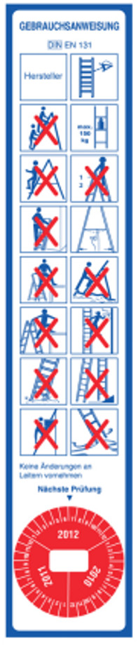
Abb. 3-14 Sicherheitshinweise für Leitern
Für das Anschlagen von Rostpaketen aber auch einzelner größerer Roste werden als Anschlagmittel meist Hebebänder oder Seile verwendet. Aus deren Kenn- zeichnung geht die Tragfähigkeit hervor (Abb. 3-15). Die DGUV Information 209-021 "Belastungstabellen für Anschlagmittel aus Rundstahlketten, Stahldrahtseilen, Rundschlingen, Chemiefaserhebebändern, Chemiefaserseilen, Naturfaserseilen" sollte den Anschlägern und Anschlägerinnen an der Montagestelle zur Verfügung stehen.
Es dürfen nur geprüfte und gekennzeichnete Anschlagmittel entsprechend der anzuschlagenden Last eingesetzt werden.
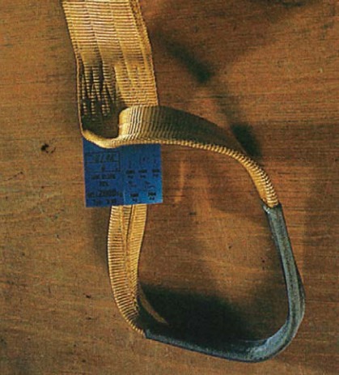
Abb. 3-15 Hebeband mit Kennzeichnung
Grundsätzlich sind alle Arbeitsmittel und PSA vor jeder Benutzung auf augenscheinliche Mängel zu prüfen.
Beschädigte Arbeitsmittel und PSA sind umgehend der Benutzung sicher zu entziehen und der Instandhaltung zuzuführen. Reparaturen führen ausschließlich fachlich befähigte Personen durch, z. B. Elektrofachkräfte bei elektrischen Betriebsmitteln.
Darüber hinaus sind Arbeitsmittel und PSA in regelmäßi- gen Abständen zu prüfen, um die Einsatzbereitschaft sicherzustellen. Die Abstände der regelmäßigen Prüfun- gen legt die Geschäftsführung fest. Übliche Prüffristen siehe Abb. 3-16.
Prüfungen dürfen nur von befähigten und mit der Prüfung beauftragten Personen durchgeführt werden.
Abb. 3-16 Beispiele von Prüffristen für ausgewählte Arbeitsmittel und PSA (Richtwerte)